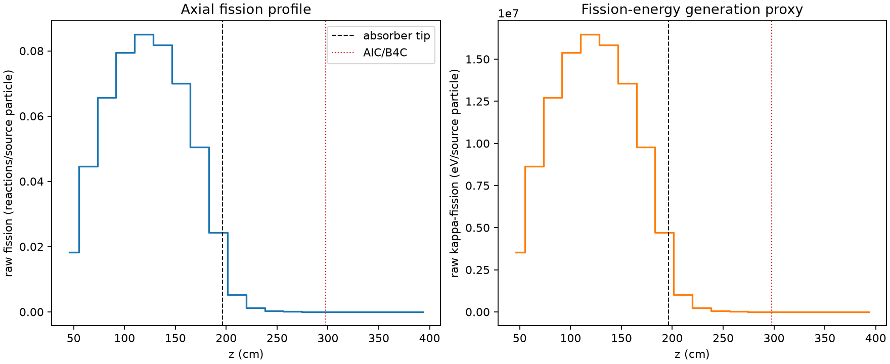
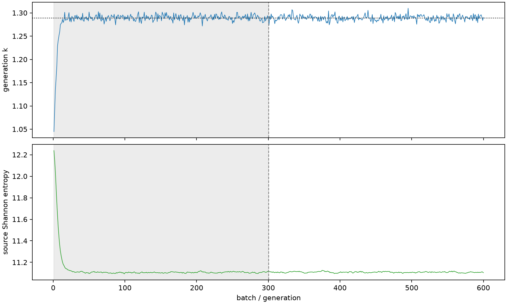

| field | value |
|---|---|
| experiment | V2-STAGE_256_OGRENCI_03-0028 |
| k | 1.2890754574353074 |
| MC standard error | 0.0001879803852010533 |
| seconds | 900.3184421350015 |
| acceptance | not_assessed |
| convergence | review_required |
Completed is output integrity only; physical and statistical review required. Zero tallies do not prove zero production or zero uncertainty.
| diagnostic | value |
|---|---|
| geometric fuel voxels | 5280 |
| zero fission tally voxels | 707 |
| low signal fuel voxels | 1899 |
| low signal fission share | 8.416934348718951e-05 |
| low signal kappa share | 8.419300824142677e-05 |
| important fission share | 0.9501192267233335 |
| previous filter included | 3381 |
| duration estimate s | 1562.5173488400023 |
| actual minus estimate s | -662.1989067050008 |
| fission relative MC error | statistics |
|---|---|
| all_geometric_fuel | {"voxels": 5280, "positive_mean_voxels": 4573, "zero_mean_voxels": 707, "undefined_relative_error_voxels": 707, "median": 0.013824397654259945, "p95": 1.0, "maximum": 1.0000000000000002} |
| low_signal | {"voxels": 1899, "positive_mean_voxels": 1192, "zero_mean_voxels": 707, "undefined_relative_error_voxels": 707, "median": 0.7068417381029404, "p95": 1.0, "maximum": 1.0000000000000002} |
| important_95pct | {"voxels": 2100, "positive_mean_voxels": 2100, "zero_mean_voxels": 0, "undefined_relative_error_voxels": 0, "median": 0.007089368605222457, "p95": 0.011686048444978808, "maximum": 0.014536410894629584} |
| outside_previous_filter | {"voxels": 1899, "positive_mean_voxels": 1192, "zero_mean_voxels": 707, "undefined_relative_error_voxels": 707, "median": 0.7068417381029404, "p95": 1.0, "maximum": 1.0000000000000002} |
| kappa_fission relative MC error | statistics |
|---|---|
| all_geometric_fuel | {"voxels": 5280, "positive_mean_voxels": 4573, "zero_mean_voxels": 707, "undefined_relative_error_voxels": 707, "median": 0.013809952674042461, "p95": 1.0, "maximum": 1.0000000000000002} |
| low_signal | {"voxels": 1899, "positive_mean_voxels": 1192, "zero_mean_voxels": 707, "undefined_relative_error_voxels": 707, "median": 0.7070126176418134, "p95": 1.0, "maximum": 1.0000000000000002} |
| important_95pct | {"voxels": 2100, "positive_mean_voxels": 2100, "zero_mean_voxels": 0, "undefined_relative_error_voxels": 0, "median": 0.007082114090272425, "p95": 0.011673773481066237, "maximum": 0.01452126415450466} |
| outside_previous_filter | {"voxels": 1899, "positive_mean_voxels": 1192, "zero_mean_voxels": 707, "undefined_relative_error_voxels": 707, "median": 0.7070126176418134, "p95": 1.0, "maximum": 1.0000000000000002} |
| axial bin | fission share | kappa-fission share |
|---|---|---|
| 1 | 0.034695037471630455 | 0.034696082361950834 |
| 2 | 0.08482227738300538 | 0.08482173163169186 |
| 3 | 0.12467142715617233 | 0.12467066672769238 |
| 4 | 0.15091163774315358 | 0.15091058478287653 |
| 5 | 0.16137627725014905 | 0.16137505852729392 |
| 6 | 0.1553081289043262 | 0.1553067431470954 |
| 7 | 0.132893925414722 | 0.13289286154996074 |
| 8 | 0.09602559912622585 | 0.09602497467673769 |
| 9 | 0.04613796536224326 | 0.04613959809382506 |
| 10 | 0.009846841181680313 | 0.009849737082902226 |
| 11 | 0.0024515853543697003 | 0.0024523741483170086 |
| 12 | 0.000643022770282259 | 0.0006432418188724198 |
| 13 | 0.0001632230244205636 | 0.00016327934697148375 |
| 14 | 4.168887192794423e-05 | 4.169979501015861e-05 |
| 15 | 8.761763250966897e-06 | 8.763415628763127e-06 |
| 16 | 1.6159170898818218e-06 | 1.616832559051999e-06 |
| 17 | 3.7109204933835117e-07 | 3.7161135945032955e-07 |
| 18 | 2.9293294021294804e-07 | 2.9283187826236633e-07 |
| 19 | 2.300417052102391e-07 | 2.3027932457847687e-07 |
| 20 | 9.123865535117893e-08 | 9.133805226044361e-08 |
Histories include the inactive-to-active transition at batch 300. kappa-fission approximates fission energy production, not total heat deposition.

